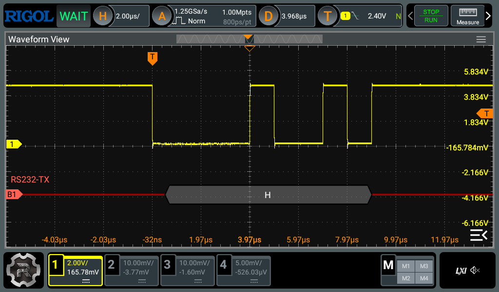
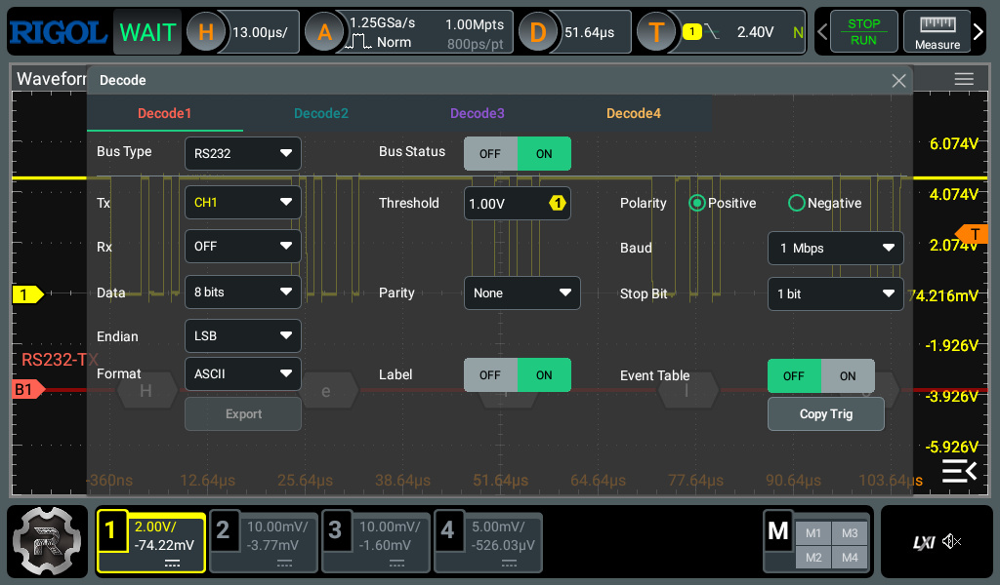
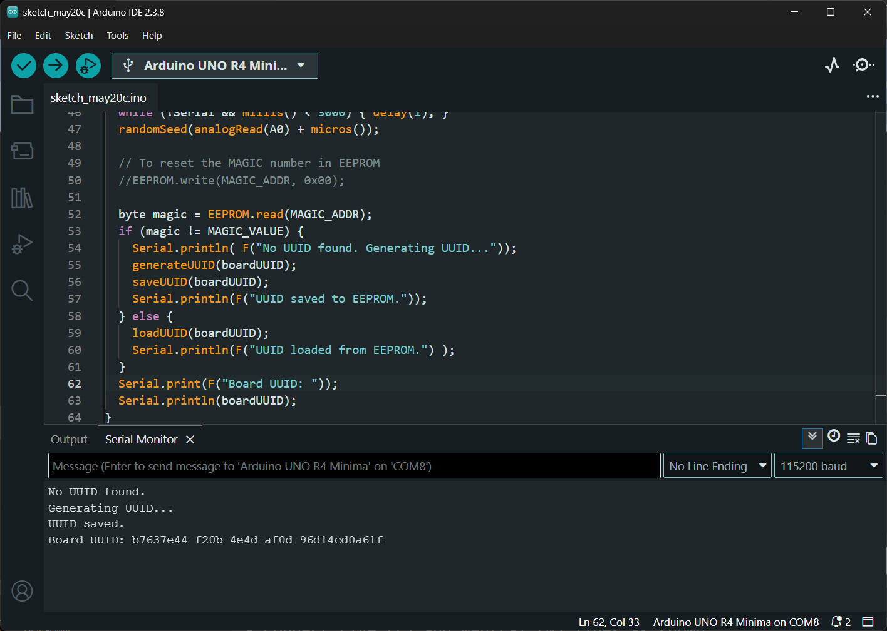
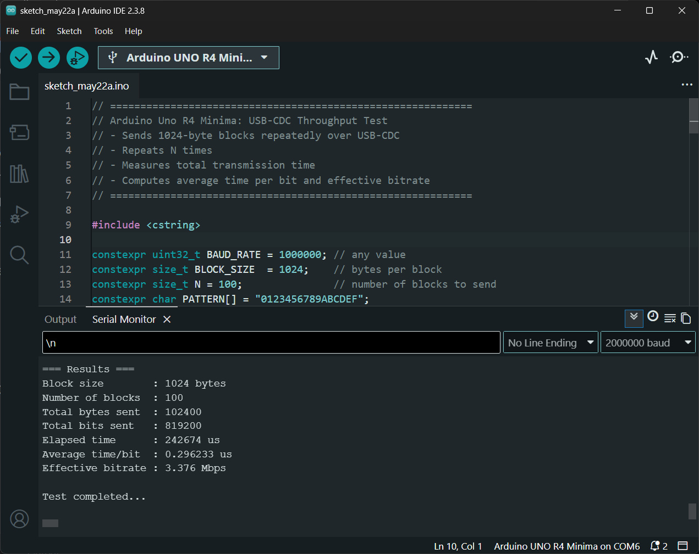
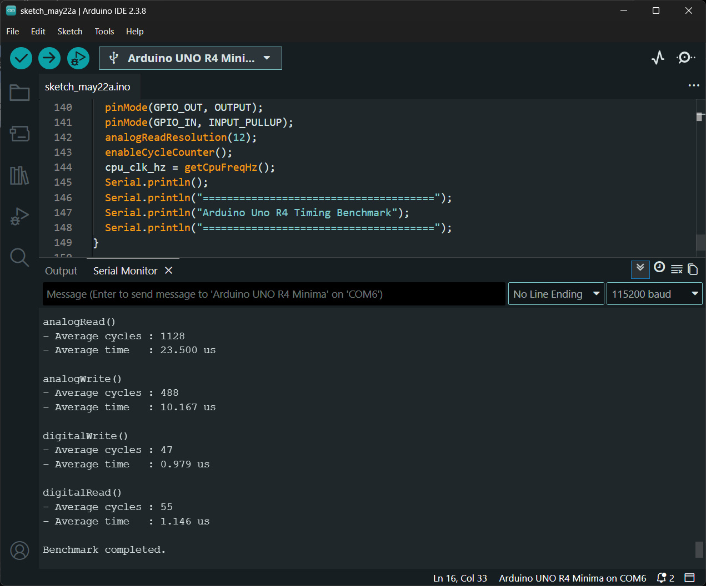
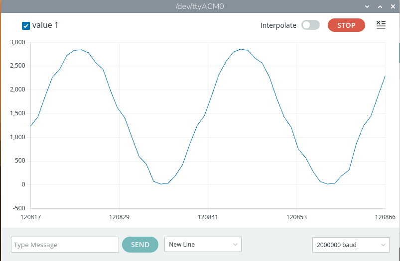
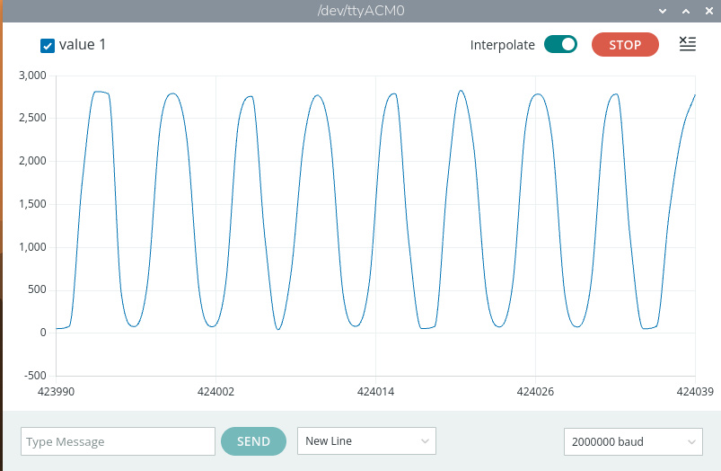
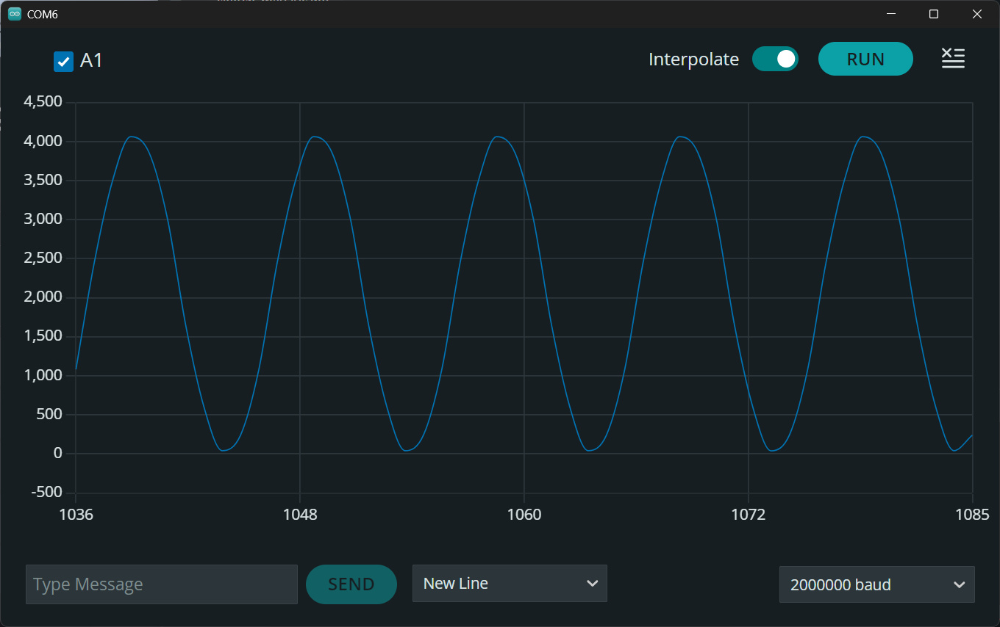
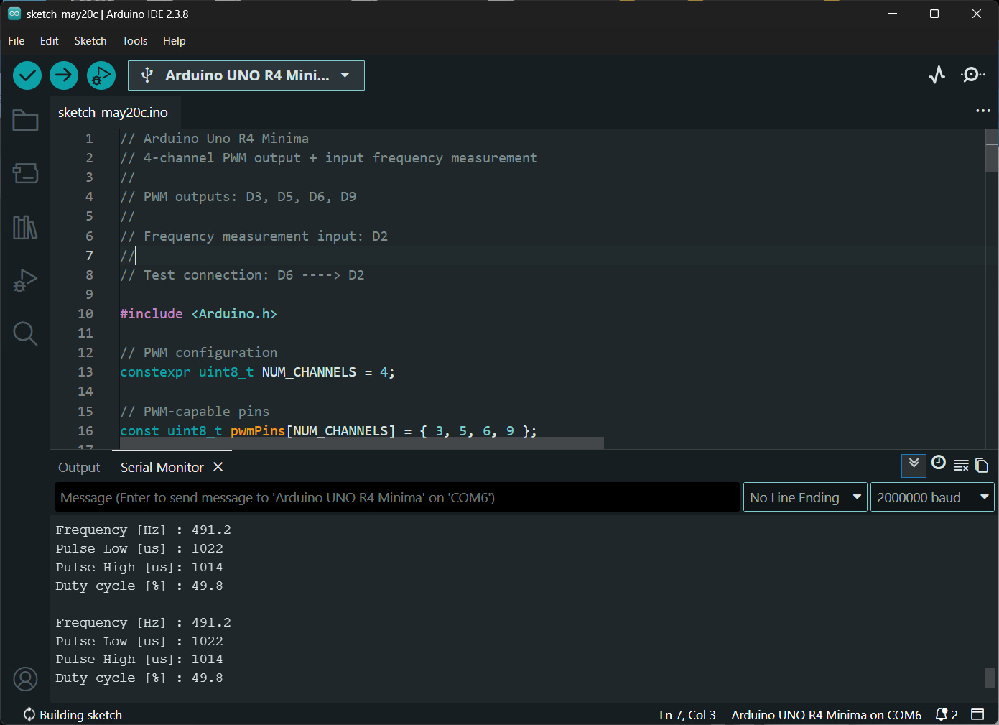

แนะนำการใช้งานบอร์ด Arduino Uno R4 Minima (ตอนที่ 2)#
Keywords: Arduino Uno R4 Minima, Renesas R7FA4M1A, I/O Speed Test, ADC Sampling, DAC Output, PWM Output, Pulse Width & Frequency Measurement
บทความนี้นำเสนอเกี่ยวกับ Arduino Uno R4 Minima พร้อมตัวอย่างการเขียนโค้ด Arduino เพื่อทดลองใช้งานบอร์ดในเบื้องต้น โดยนำเสนอเป็น ตอนที่ 2
- ตัวอย่างโค้ดที่ 1: USB-Serial-Bridge
- ตัวอย่างโค้ดที่ 2: EEPROM Write/Read Demo
- ตัวอย่างโค้ดที่ 3: Serial Speed Test
- ตัวอย่างโค้ดที่ 4: Digital & Analog I/O Speed Test
- ตัวอย่างโค้ดที่ 5: Timer-based ADC Sampling
- ตัวอย่างโค้ดที่ 6: DAC-ADC Test
- ตัวอย่างโค้ดที่ 7: Pulse Width and Frequency Measurement
ตัวอย่างโค้ดที่ 1: USB-Serial-Bridge#
โค้ดตัวอย่างนี้สร้าง USB-to-UART Bridge โดยใช้บอร์ด Arduino Uno R4 Minima
โดยทำหน้าที่รับส่งข้อมูลระหว่าง USB CDC (Serial) และฮาร์ดแวร์ UART (Serial1)
แบบสองทิศทาง
หลักการสำคัญคือ การตรวจสอบข้อมูลที่เข้ามาในแต่ละพอร์ตด้วยคำสั่ง available() ของ Serial หรือ Serial1
แล้วส่งต่อข้อมูลไปยังอีกพอร์ตด้วยคำสั่ง read() และ write() ทำให้บอร์ดสามารถทำงานเสมือนตัวแปลง
หรือตัวเชื่อมต่อระหว่าง USB กับ Serial ได้
ในตัวอย่างนี้กำหนด Baud Rate สูงถึง 1000000 เพื่อรองรับการสื่อสารความเร็วสูง โดย Serial
ใช้เชื่อมต่อกับคอมพิวเตอร์ผ่าน USB ส่วน Serial1 ใช้ขา D0 (RX) และ D1 (TX)
สำหรับเชื่อมต่อกับอุปกรณ์ UART ภายนอก
#include <Arduino.h>
constexpr uint32_t BAUD_RATE = 1000000; // Try 1M or 4M baud rate
void setup() {
// USB CDC
Serial.begin(BAUD_RATE);
while (!Serial && millis() < 3000 ) { delay(1); }
// Hardware UART (D0 = RX, D1 = TX)
Serial1.begin(BAUD_RATE);
Serial.println("USB <-> UART Bridge Ready");
Serial.print("Baud: ");
Serial.println(BAUD_RATE);
}
void loop() {
// USB -> UART
while (Serial.available()) {
Serial1.write(Serial.read());
}
// UART -> USB
while (Serial1.available()) {
Serial.write(Serial1.read());
}
}
ในการทดลอง แนะนำให้ใช้ลวดสายไฟ เชื่อมต่อขา TX กับ RX เข้าด้วยกัน (ทดสอบการทำงานแบบ Loopback) แล้วใช้ออสซิลโลสโคป วัดสัญญาณที่ขา TX

รูป: ตัวอย่างการวัดสัญญาณ TX และการวิเคราะห์สัญญาณตามโพรโตคอล RS232 (Serial)
ซึ่งแสดงให้เห็นข้อความ (เป็นรหัส ASCII) "Hello" ตามลำดับ

รูป: ช่วงเวลาที่ส่งข้อมูลหนึ่งไบต์ ตรงกับตัวอักขระ 'H'

รูป: ตัวอย่างการใช้ Cursor ของออสซิลโลสโคป วัดความกว้างของพัลส์บนสัญญาณ TX

รูป: ตัวอย่างการตั้งค่าสำหรับ RIGOL DHO814 เพื่อ Decode สัญญาณสำหรับ RS232
ตัวอย่างโค้ดที่ 2: EEPROM Write/Read Demo#
ตัวอย่างโค้ดนี้สาธิตการใช้งานไลบรารี EEPROM ของ Arduino Uno R4
เพื่อจัดเก็บและอ่านข้อมูลถาวรจากหน่วยความจำ Flash ที่จำลองการทำงานแบบ EEPROM
โดยใช้ข้อความ UUID แบบสุ่ม เป็นหมายเลขที่ใช้ระบุบอร์ดได้ (Board Identification)
หลักการทำงานของโปรแกรมมีดังนี้
- กำหนดตำแหน่งหน่วยความจำ EEPROM สำหรับเก็บค่า Magic Number (ในแอดเดรส
MAGIC_ADDR) และข้อมูล UUID ที่มีความยาว 36 ไบต์ (เริ่มต้นที่แอดเดรสUUID_ADDR) - ใช้ค่า
MAGIC_VALUE(ไม่เท่ากับ0x00) เพื่อตรวจสอบว่ามีการบันทึก UUID ไว้แล้วหรือไม่ - ฟังก์ชัน
generateUUID()ใช้สร้าง UUID แบบสุ่มตามรูปแบบ UUID Version 4 ความยาว 36 ตัวอักษร - ฟังก์ชัน
saveUUID()ใช้เขียน UUID ลง EEPROM ทีละไบต์ - ฟังก์ชัน
loadUUID()ใช้อ่าน UUID จาก EEPROM กลับมาเก็บในตัวแปร - ในฟังก์ชัน
setup()โปรแกรมจะอ่านค่า Magic Number จาก EEPROM หากยังไม่มีข้อมูล UUID จะสร้างใหม่ แล้วบันทึกลง EEPROM - หากมีข้อมูลอยู่แล้ว จะอ่าน UUID เดิมกลับมาใช้งาน และค่าผ่าน Serial Monitor
ข้อควรระวัง:
- EEPROM ของ Arduino Uno R4 เป็นการจำลองบน Flash memory จึงมีจำนวนรอบการเขียนจำกัด
ดังนั้นไม่ควรเขียนข้อมูลซ้ำอย่างต่อเนื่องภายใน
loop()ควรเขียนข้อมูลเฉพาะเมื่อมีการเปลี่ยนแปลงจริงเท่านั้น
#include <EEPROM.h>
#define MAGIC_ADDR 0
#define UUID_ADDR 4
#define MAGIC_VALUE 0x42
constexpr int UUID_LENGTH = 36;
char boardUUID[ UUID_LENGTH + 1];
// Generate pseudo UUID v4
void generateUUID(char *uuid) {
const char *hex = "0123456789abcdef";
// Fill with '-'
for (int i = 0; i < UUID_LENGTH; i++) {
uuid[i] = '-';
}
for (unsigned int i = 0; i < UUID_LENGTH; i++) {
if (i == 8 || i == 13 || i == 18 || i == 23) {
uuid[i] = '-';
} else {
uuid[i] = hex[random(16)];
}
}
// UUID version 4
uuid[14] = '4';
// UUID variant
uuid[19] = hex[8 + random(4)];
uuid[UUID_LENGTH] = '\0';
}
void saveUUID(const char *uuid) {
for (int i = 0; i < (UUID_LENGTH+1); i++) {
EEPROM.write(UUID_ADDR + i, uuid[i]);
}
EEPROM.write(MAGIC_ADDR, MAGIC_VALUE);
}
void loadUUID(char *uuid) {
for (int i = 0; i < (UUID_LENGTH+1); i++) {
uuid[i] = EEPROM.read(UUID_ADDR + i);
}
}
void setup() {
Serial.begin(115200);
while (!Serial && millis() < 3000) { delay(1); }
randomSeed(analogRead(A0) + micros());
// To reset the MAGIC number in EEPROM
//EEPROM.write(MAGIC_ADDR, 0x00);
byte magic = EEPROM.read(MAGIC_ADDR);
if (magic != MAGIC_VALUE) {
Serial.println( F("No UUID found. Generating UUID..."));
generateUUID(boardUUID);
saveUUID(boardUUID);
Serial.println(F("UUID saved to EEPROM."));
} else {
loadUUID(boardUUID);
Serial.println(F("UUID loaded from EEPROM.") );
}
Serial.print(F("Board UUID: "));
Serial.println(boardUUID);
}
void loop() {
}

รูป: ตัวอย่างข้อความที่แสดงผ่าน Serial Monitor เมื่อโปรแกรมทำงาน
ตัวอย่างโค้ดที่ 3: Serial Speed Test#
ตัวอย่างโค้ดนี้สาธิตการวัดอัตราการส่งข้อมูลของบอร์ด Arduino Uno R4 Minima ผ่านการสื่อสารแบบ USB-CDC Serial โดยทำการส่งข้อมูลแบบไบนารีออกทางพอร์ต USB ไปยังคอมพิวเตอร์ และวัดเวลาที่ใช้ในการส่งข้อมูลทั้งหมด เพื่อคำนวณอัตราการส่งข้อมูลจริงของระบบ
โปรแกรมสร้างบัฟเฟอร์ข้อมูลขนาด 1024 ไบต์ (BLOCK_SIZE) และกำหนดรูปแบบข้อมูลตัวอย่างด้วยข้อความ "0123456789ABCDEF" ซึ่งถูกคัดลอกซ้ำลงในบัฟเฟอร์ จากนั้นโปรแกรมจะส่งข้อมูลบัฟเฟอร์ดังกล่าวซ้ำจำนวน 100 ครั้ง (N = 100) ผ่านฟังก์ชัน Serial.write()
การวัดเวลาจะเริ่มต้นก่อนการส่งข้อมูลด้วยฟังก์ชัน micros() และหยุดเวลาเมื่อข้อมูลทั้งหมดถูกส่งออกเรียบร้อยแล้ว โดยใช้ Serial.flush() เพื่อรอให้ USB-CDC ส่งข้อมูลในบัฟเฟอร์ภายในออกครบทั้งหมดจริง ก่อนอ่านค่าเวลาสิ้นสุด
ผลลัพธ์จะแสดงผ่าน Serial Monitor ในหน่วยไมโครวินาที (µs) และเมกะบิตต่อวินาที (Mbps)
// Arduino Uno R4 Minima: USB-CDC Throughput Test
// - Sends 1024-byte blocks repeatedly over USB-CDC
// - Repeats N times
// - Measures total transmission time
// - Computes average time per bit and effective bitrate
#include <cstring> // for std::memcpy()
constexpr uint32_t BAUD_RATE = 1000000; // any value
constexpr size_t BLOCK_SIZE = 1024; // bytes per block
constexpr size_t N = 100; // number of blocks to send
constexpr char PATTERN[] = "0123456789ABCDEF";
constexpr size_t PATERN_LEN = sizeof(PATTERN) - 1;
void test() {
// Fill buffer with test pattern
uint8_t txBuffer[BLOCK_SIZE];
size_t byte_count = 0;
uint8_t *ptr = txBuffer;
for (size_t i = 0; i < BLOCK_SIZE / 16; i++) {
std::memcpy(ptr, PATTERN, PATERN_LEN);
ptr += 16;
byte_count += 16;
}
// Fill any remaining bytes if BLOCK_SIZE is not a multiple of 16
if (BLOCK_SIZE > byte_count) {
std::memcpy(ptr, PATTERN, BLOCK_SIZE - byte_count);
}
// Start timing
uint32_t t0 = micros();
for (size_t i = 0; i < N; i++) {
Serial.write(txBuffer, BLOCK_SIZE);
}
// Wait until all USB data transmitted
Serial.flush();
uint32_t t1 = micros();
// Compute statistics
uint32_t elapsed_us = t1 - t0;
uint64_t totalBytes = (uint64_t)BLOCK_SIZE * N;
uint64_t totalBits = totalBytes * 8;
double seconds = elapsed_us / 1e6;
double avgTimePerBit_us = (double)elapsed_us / (double)totalBits;
double bitrate = (double)totalBits / seconds;
String msg;
msg += "\n=== Results ===\n";
msg += "Block size : " + String(BLOCK_SIZE) + " bytes\n";
msg += "Number of blocks : " + String(N) + "\n";
msg += "Total bytes sent : " + String((uint32_t)totalBytes) + "\n";
msg += "Total bits sent : " + String((uint32_t)totalBits) + "\n";
msg += "Elapsed time : " + String(elapsed_us) + " us\n";
msg += "Average time/bit : " + String(avgTimePerBit_us, 6) + " us\n";
msg += "Effective bitrate : " + String(bitrate / 1e6, 3) + " Mbps\n";
msg += "\nTest completed...\n";
Serial.print(msg);
}
void setup() {
Serial.begin(BAUD_RATE);
while (!Serial && millis() < 3000) { delay(1); }
Serial.println();
Serial.println("\n=== USB-CDC Speed Test ===");
}
void loop() {
test();
delay(5000);
}
จากการทดสอบพบว่า อัตราการส่งข้อมูลออก วัดได้ประมาณ 3.376 Mbps ตามที่แสดงในข้อความเอาต์พุตต่อไปนี้

รูป: ตัวอย่างข้อความที่ได้รับใน Arduino Serial Monitor เมื่อโปรแกรมทำงาน
ตัวอย่างโค้ดที่ 4: Digital & Analog I/O Speed Test#
ตัวอย่างโค้ดนี้สาธิตการวัดความเร็วหรือระยะเวลาในการทำงานของฟังก์ชันพื้นฐาน
สำหรับ I/O ของ Arduino Uno R4 Minima ได้แก่ analogRead(),
analogWrite(), digitalWrite() และ digitalRead()
โดยใช้วงจรนับจำนวนไซเคิลสำหรับการทำงานของซีพียู (CPU Cycle)
ARM Cortex-M4 ที่เรียกว่า DWT Cycle Counter (
Data Watchpoint and Trace Cycle Counter)
หลักการทำงานของโปรแกรมคือ การอ่านค่าตัวนับคล็อกไซเคิลก่อนและหลังการเรียกใช้ฟังก์ชันที่ต้องการทดสอบ
จากนั้นนำผลต่างของจำนวนคล็อกไซเคิลมาคำนวณเป็นระยะเวลาในการทำงานของฟังก์ชันนั้น
โดยมีการทำซ้ำหลายครั้ง (TEST_COUNT) แล้วคำนวณค่าเฉลี่ย
เพื่อลดผลกระทบจากความคลาดเคลื่อนและความแปรปรวนของเวลาในการทำงาน
นอกจากนี้ โปรแกรมยังอ่านค่าความถี่สัญญาณนาฬิกาของซีพียูจริงในขณะรันโปรแกรม
ผ่านตัวแปร SystemCoreClock ของ ARM CMSIS API
ฟังก์ชันที่ใช้ทดสอบมีดังนี้
measureAnalogRead()ใช้วัดเวลาที่ใช้ในการอ่านค่า ADC จากขาA0และA1measureAnalogWrite()ใช้วัดเวลาที่ใช้ในการสร้างสัญญาณแอนะล็อกเอาต์พุตด้วยanalogWrite()measureDigitalWrite()ใช้วัดเวลาที่ใช้ในการเปลี่ยนสถานะลอจิกของขา GPIOmeasureDigitalRead()ใช้วัดเวลาที่ใช้ในการอ่านสถานะลอจิกจากขาอินพุตดิจิทัล
ผลการวัดจะถูกแสดงผ่าน Serial Monitor ทั้งในหน่วยจำนวนคล็อกไซเคิลเฉลี่ย และเวลาเฉลี่ยในหน่วยไมโครวินาที (µs)
// Arduino Uno R4 Minima: Measure execution time of:
// - analogRead()
// - analogWrite()
// - digitalWrite()
// - digitalRead()
// using ARM Cortex-M4 DWT Cycle Counter.
constexpr uint32_t TEST_COUNT = 10000;
constexpr int GPIO_IN = 2;
constexpr int GPIO_OUT = 13;
uint32_t cpu_clk_hz = 0;
inline uint32_t getCpuFreqHz() {
// CMSIS global variable
SystemCoreClockUpdate();
return SystemCoreClock;
}
// Convert cycles to microseconds
double cyclesToUs(uint32_t cycles) {
return ((double)cycles * 1e6) / cpu_clk_hz;
}
// Enable DWT Cycle Counter
void enableCycleCounter() {
// Enable trace subsystem
CoreDebug->DEMCR |= CoreDebug_DEMCR_TRCENA_Msk;
// Reset cycle counter
DWT->CYCCNT = 0;
// Enable cycle counter
DWT->CTRL |= DWT_CTRL_CYCCNTENA_Msk;
}
// Measure analogRead()
uint32_t measureAnalogRead() {
volatile uint16_t value;
uint64_t totalCycles = 0;
for (uint32_t i = 0; i < TEST_COUNT; i++) {
uint32_t startTime = DWT->CYCCNT;
value = analogRead(A0);
value = analogRead(A1);
uint32_t endTime = DWT->CYCCNT;
totalCycles += (endTime - startTime);
}
return totalCycles / (TEST_COUNT * 2);
}
// Measure analogWrite()
uint32_t measureAnalogWrite() {
uint64_t totalCycles = 0;
for (uint32_t i = 0; i < TEST_COUNT; i++) {
uint32_t startTime = DWT->CYCCNT;
analogWrite(A0, 0);
analogWrite(A0, 4095);
uint32_t endTime = DWT->CYCCNT;
totalCycles += (endTime - startTime);
}
return totalCycles / (TEST_COUNT * 2);
}
// Measure digitalWrite()
uint32_t measureDigitalWrite() {
uint64_t totalCycles = 0;
for (uint32_t i = 0; i < TEST_COUNT; i++) {
uint32_t startTime = DWT->CYCCNT;
digitalWrite(GPIO_OUT, HIGH);
digitalWrite(GPIO_OUT, LOW);
uint32_t endTime = DWT->CYCCNT;
totalCycles += (endTime - startTime);
}
// divide by 2 because two calls were measured
return totalCycles / (TEST_COUNT * 2);
}
// Measure digitalRead()
uint32_t measureDigitalRead() {
volatile int value;
uint64_t totalCycles = 0;
for (uint32_t i = 0; i < TEST_COUNT; i++) {
uint32_t startTime = DWT->CYCCNT;
value = digitalRead(GPIO_IN);
uint32_t endTime = DWT->CYCCNT;
totalCycles += (endTime - startTime);
}
return totalCycles / (TEST_COUNT);
}
void printResult(const __FlashStringHelper* name, uint32_t cycles) {
String msg;
msg.reserve(120);
msg += '\n';
msg += name;
msg += "()\n";
msg += F("- Average cycles : ");
msg += String(cycles);
msg += '\n';
msg += F("- Average time : ");
msg += String(cyclesToUs(cycles), 3);
msg += F(" us\n");
Serial.print(msg);
}
void test() {
printResult( F("analogRead"), measureAnalogRead());
printResult( F("analogWrite"), measureAnalogWrite());
printResult( F("digitalWrite"), measureDigitalWrite());
printResult( F("digitalRead"), measureDigitalRead());
Serial.println(F("\nBenchmark completed."));
}
void setup() {
Serial.begin(115200);
while (!Serial && millis() < 5000) { delay(1); }
pinMode(GPIO_OUT, OUTPUT);
pinMode(GPIO_IN, INPUT_PULLUP);
analogReadResolution(12);
enableCycleCounter();
Serial.println();
Serial.println("======================================");
Serial.println("Arduino Uno R4 Timing Benchmark");
Serial.println("======================================");
cpu_clk_hz = getCpuFreqHz();
Serial.print("CPU Freq.: ");
Serial.println( cpu_clk_hz);
}
void loop() {
test();
delay(5000);
}
จากการทดสอบ จะได้ค่าจากข้อความเอาต์พุตดังนี้
analogRead()ใช้เวลาประมาณ 23.5 us ต่อหนึ่งครั้งanalogWrite()ใช้เวลาประมาณ 10.167 us ต่อหนึ่งครั้งdigitalWrite()ใช้เวลาประมาณ 0.979 us ต่อหนึ่งครั้งdigitalRead()ใช้เวลาประมาณ 1.146 us ต่อหนึ่งครั้ง

รูป: ตัวอย่างข้อความที่แสดงผ่าน Serial Monitor แสดงค่าเวลาที่วัดได้สำหรับการทำงานของแต่ละฟังก์ชันที่เกี่ยวข้องกับ I/O
ตัวอย่างโค้ดที่ 5: Timer-based ADC Sampling#
โค้ดตัวอย่างนี้สาธิตการใช้งาน Arduino Uno R4 Minima เพื่ออ่านค่าสัญญาณแอนะล็อกจากขา A0
แบบคาบเวลา (Periodic Sampling) โดยใช้วงจร Timer ภายในชิป สร้างอินเทอร์รัพท์ที่อัตรา 10 kHz
และส่งข้อมูลผ่าน USB-CDC Serial ไปยัง Arduino Serial Plotter สำหรับแสดงรูปคลื่นสัญญาณ
หลักการสำคัญของโค้ดคือ การใช้ Timer Interrupt ควบคุมจังหวะการอ่าน ADC ให้มีช่วงเวลาสม่ำเสมอ
และมีการใช้ฟังก์ชันทำหน้าที่เป็น Callback / ISR เมื่อเกิดอินเทอร์รัพท์ในแต่ละครั้ง โดยให้ทำคำสั่ง analogRead()
และนำค่าเป็นเก็บไว้ในตัวแปร adcSample และกำหนดค่าตัวแปร sampleReady ให้เป็น true
เพื่อแจ้งว่า มีข้อมูลใหม่พร้อมใช้งาน
การทำงานของฟังก์ชัน loop() คอยตรวจสอบดูว่า ตรวจสอบว่ามีข้อมูลใหม่จาก ISR หรือไม่
ดูว่า sampleReady เป็น true หรือไม่ ถ้าใช่ ให้อ่านค่าจากตัวแปรดังกล่าว การทำขั้นตอนนี้ถือว่าเป็น
Critical Section ดังนั้นจึงต้องมีการปิด Interrupt ชั่วคราว
คัดลอกข้อมูลจากตัวแปร sampleReady แล้วเปิด Interrupt ให้เหมือนเดิม
ถัดไปจึงส่งข้อมูลที่ได้ออกทาง Serial
/*
Arduino Uno R4 Minima: Timer-based periodic ADC sampling on A0
Send sampled data over USB-CDC Serial
Use the Arduino Serial Plotter for sample visualization
*/
#include <Arduino.h>
#include "FspTimer.h"
constexpr uint32_t SAMPLE_RATE_HZ = 10000; // 10 kHz
constexpr uint8_t ADC_PIN = A0;
volatile uint16_t adcSample = 0;
volatile bool sampleReady = false;
FspTimer timer;
// Timer ISR
void timerCallback(timer_callback_args_t *p_args) {
(void)p_args;
adcSample = analogRead(ADC_PIN);
sampleReady = true;
}
void initTimer() {
// Configure periodic timer interrupt
uint8_t timer_type;
int8_t timer_channel;
timer_channel = FspTimer::get_available_timer(timer_type);
if (timer_channel < 0) {
while (1) {} // Blocking
}
bool ok = timer.begin(
TIMER_MODE_PERIODIC,
timer_type,
timer_channel,
SAMPLE_RATE_HZ,
0.0f,
timerCallback);
if (!ok) {
Serial.println(F("Timer initialization failed!"));
while (1) {} // Blocking
}
timer.setup_overflow_irq();
timer.open();
timer.start();
}
void setup() {
// USB-CDC Serial
Serial.begin(2000000); // any baud rate value
// Optional wait for USB connection
while (!Serial && millis() < 3000) { delay(1); }
analogReadResolution(12); // Uno R4 ADC = 12-bit
initTimer();
}
void loop() {
if (sampleReady) {
noInterrupts();
uint16_t value = adcSample;
sampleReady = false;
interrupts(); // Re-enable interrupts
Serial.println(value);
}
}


รูป: ตัวอย่างการแสดงข้อมูลที่ได้รับผ่าน Serial ในหน้าต่าง Arduino Serial Plotter
ตัวอย่างโค้ดที่ 6: DAC-ADC Test#
โค้ดตัวอย่างนี้สาธิตการใช้งานวงจรแปลงสัญญาณดิจิทัลเป็นแอนะล็อก (DAC)
และวงจรแปลงสัญญาณแอนะล็อกเป็นดิจิทัล (ADC) ของ Arduino Uno R4 Minima พร้อมกัน
โดยให้บอร์ดสร้างสัญญาณไซน์ออกทางขา A0 และอ่านกลับเข้าทางขา A1 เพื่อตรวจสอบการทำงานของระบบแอนะล็อก
และในการทดสอบต้องต่อสายระหว่างขา A0 และ A1
ในตัวอย่างนี้มีการใช้ GPT Timer ของไมโครคอนโทรลเลอร์ RA4M1 เพื่อสร้าง Interrupt แบบคาบเวลา (Periodic Interrupt) ค่าความถี่ Timer ถูกกำหนดเป็น 3200 Hz หมายความว่า ISR จะถูกเรียก 3200 ครั้งต่อวินาที และเนื่องจากมีข้อมูลทั้งหมด 64 สำหรับหนึ่งคาบสัญญาณรูปไซน์ ดังนั้นจะได้ความถี่ของเอาต์พุตเท่ากับ 3200 / 64 = 50 Hz
ในการอ่านค่า ADC ที่ขา A1 ได้ใช้คำสั่ง analogRead() ในฟังก์ชัน loop() และทุก ๆ 2 msec
โดยประมาณ (ได้อัตรา Sample Rate = 500Hz) ค่าที่อ่านได้จะถูกส่งเป็นข้อความของตัวเลขผ่าน Serial เพื่อนำไปใช้กับ Arduino Serial Plotter
// Arduino Uno R4 Minima
// DAC waveform output on A0 using timer interrupt
// Periodic ADC sampling on A1
//
// Test connection:
// A0 ----> A1
//
#include <Arduino.h>
#include "FspTimer.h"
constexpr uint32_t ADC_INTERVAL_MSEC = 2;
FspTimer timer;
// 64-sample sine wave table
// 16-bit values: 0 .. 65535
const uint16_t waveTable[64] = {
32767, 35979, 39160, 42279, 45306, 48213, 50971, 53554,
55937, 58096, 60012, 61665, 63040, 64123, 64904, 65376,
65534, 65376, 64904, 64123, 63040, 61665, 60012, 58096,
55937, 53554, 50971, 48213, 45306, 42279, 39160, 35979,
32767, 29555, 26374, 23255, 20228, 17321, 14563, 11980,
9597, 7438, 5522, 3869, 2494, 1411, 630, 158,
0, 158, 630, 1411, 2494, 3869, 5522, 7438,
9597, 11980, 14563, 17321, 20228, 23255, 26374, 29555,
};
constexpr uint32_t waveSize = sizeof(waveTable) / sizeof(waveTable[0]);
volatile uint32_t waveIndex = 0;
// Timer ISR
// Runs periodically and updates DAC output on A0
void timer_callback(timer_callback_args_t *p_args) {
analogWrite(A0, waveTable[waveIndex] >> 4); // reduce to 12 bits
waveIndex++;
if (waveIndex >= waveSize) {
waveIndex = 0;
}
}
void setup() {
Serial.begin(115200);
while (!Serial && millis() < 3000) { delay(1); }
// DAC resolution = 12-bit
analogWriteResolution(12);
// ADC resolution = 12-bit
analogReadResolution(12);
// Initialize DAC output
analogWrite(A0, 0);
// Configure GPT timer
uint8_t timer_type = GPT_TIMER;
int8_t timer_ch = FspTimer::get_available_timer(timer_type);
if (timer_ch < 0) {
Serial.println("No timer available");
while (1) {} // Blocking
}
// Timer frequency = 50 Hz
// ISR updates DAC waveform periodically
timer.begin(
TIMER_MODE_PERIODIC,
timer_type,
timer_ch,
3200.0f,
0.0f,
timer_callback);
timer.setup_overflow_irq();
timer.open();
timer.start();
Serial.println("DAC waveform started");
Serial.println("Connect A0 -> A1");
}
void loop() {
static uint32_t lastSampleTime = 0;
uint32_t now = millis();
// Reads ADC on the A1 pin
if ((now - lastSampleTime) >= ADC_INTERVAL_MSEC) {
lastSampleTime = now;
// Read ADC from A1
uint16_t adcValue = analogRead(A1);
// Print ADC value
Serial.print("A1:");
Serial.println(adcValue);
}
}

รูป: ตัวอย่างการแสดงกราฟข้อมูลที่ได้รับใน Arduino Serial Plotter
ตัวอย่างโค้ดที่ 7: Pulse Width and Frequency Measurement using pulseIn()#
โค้ดตัวอย่างนี้สาธิตการสร้างสัญญาณ PWM จำนวน 4 ช่องสัญญาณ ที่ขา D3, D5, D6, D9
แล้วเลือกขาดังกล่าว นำมาใช้เป็นอินพุต เพื่อวัดค่าความถี่และค่า Duty Cycle การวัดความกว้างของพัลส์ ก็ใช้คำสั่ง
pulseIn() ของ Arduino API และใช้คำนวณหาความถี่ของสัญญาณที่มีคาบเวลาได้เช่นกัน
// Arduino Uno R4 Minima
// 4-channel PWM output + input frequency measurement
//
// PWM outputs: D3, D5, D6, D9
//
// Frequency measurement input: D2
//
// Test connection: D6 ----> D2
#include <Arduino.h>
// PWM configuration
constexpr uint8_t NUM_CHANNELS = 4;
// PWM-capable pins
const uint8_t pwmPins[NUM_CHANNELS] = { 3, 5, 6, 9 };
// PWM resolution
constexpr uint8_t PWM_RESOLUTION_BITS = 8;
constexpr uint16_t PWM_MAX = (1 << PWM_RESOLUTION_BITS) - 1;
// Frequency measurement input pin
constexpr uint8_t INPUT_PIN = 2;
#define DUTY_CYCLE(percent) ((percent)*PWM_MAX / 100)
const uint16_t dutyCycles[NUM_CHANNELS] = {
DUTY_CYCLE(10), // D3 = 10%
DUTY_CYCLE(25), // D5 = 25%
DUTY_CYCLE(50), // D6 = 50%
DUTY_CYCLE(75) // D9 = 75%
};
// Function declaration
// Measure frequency using pulseIn()
bool measureFrequencyHz(uint8_t pin, float *freq,
uint32_t *lowTimeUs,
uint32_t *highTimeUs,
uint32_t *periodUs);
void setup() {
Serial.begin(115200);
while (!Serial && millis() < 3000) { delay(1); }
// Configure PWM resolution
analogWriteResolution(PWM_RESOLUTION_BITS);
// Configure PWM outputs
for (uint8_t i = 0; i < NUM_CHANNELS; i++) {
pinMode(pwmPins[i], OUTPUT);
// Generate PWM signal
analogWrite(pwmPins[i], dutyCycles[i]);
// Print channel information
Serial.print(F("PWM Pin D"));
Serial.print(pwmPins[i]);
Serial.print(F(" | Duty Cycle = "));
Serial.print((uint32_t)dutyCycles[i] * 100 / PWM_MAX);
Serial.print(F("%"));
Serial.print(F(" | PWM Value = "));
Serial.println(dutyCycles[i]);
}
// Configure frequency input pin
pinMode(INPUT_PIN, INPUT_PULLUP);
Serial.println();
Serial.println(F("4-channel PWM generation started."));
}
void loop() {
float freq;
uint32_t v[3];
bool result = measureFrequencyHz(INPUT_PIN, &freq,
&v[0], &v[1], &v[2]);
if (result) {
Serial.print( "\nFrequency [Hz] : ");
Serial.println(freq, 1);
Serial.print( "Pulse Low [us] : ");
Serial.println( v[0] );
Serial.print( "Pulse High [us]: ");
Serial.println( v[1] );
Serial.print( "Duty cycle [%] : ");
float duty = (100.0f*v[1]) / v[2];
Serial.println(duty, 1);
}
delay(1000);
}
// Measure frequency using pulseIn()
bool measureFrequencyHz(
uint8_t pin,
float *freq,
uint32_t *lowTimeUs,
uint32_t *highTimeUs,
uint32_t *periodUs)
{
// Measure HIGH pulse width
uint32_t high_pulse_us = pulseIn(pin, HIGH, 1000000);
delay(1);
// Measure LOW pulse width
uint32_t low_pulse_us = pulseIn(pin, LOW, 1000000);
// Invalid measurement
if (high_pulse_us == 0 || low_pulse_us == 0) {
return false;
}
// Signal period
uint32_t period_us = low_pulse_us + high_pulse_us;
*lowTimeUs = low_pulse_us;
*highTimeUs = high_pulse_us;
*periodUs = period_us;
// Frequency calculation
*freq = 1000000.0f / period_us;
return true;
}
uint32_t measurePulseWidthHighUs(uint8_t pin) {
return pulseIn(pin, HIGH, 1000000 /*timeout usec*/); // blocking call
}
uint32_t measurePulseWidthLowUs(uint8_t pin) {
return pulseIn(pin, LOW, 1000000 /*timeout usec*/); // blocking call
}

รูป: ตัวอย่างข้อความเอาต์พุตแสดงค่าความถี่ และ Duty Cycle ของสัญญาณ PWM ที่ขา D6
หากไม่ต้องการใช้คำสั่ง pulseIn() ก็อาจะใช้วิธีตรวจสอบการเกิดอินเทอร์รัพท์ที่ขาอินพุต และจับเวลา ตามโค้ดตัวอย่างต่อไปนี้
// Arduino Uno R4 Minima
// PWM generation + pulse-width measurement
// WITHOUT using pulseIn()
//
// PWM outputs: D3, D5, D6, D9
//
// Measurement input: D2
//
// Test connection: D3 ----> D2
//
#include <Arduino.h>
// PWM configuration
constexpr uint8_t NUM_CHANNELS = 4;
// PWM-capable pins
const uint8_t pwmPins[NUM_CHANNELS] = { 3, 5, 6, 9 };
// PWM resolution
constexpr uint8_t PWM_RESOLUTION_BITS = 8;
constexpr uint16_t PWM_MAX = (1 << PWM_RESOLUTION_BITS) - 1;
// Measurement input pin
constexpr uint8_t INPUT_PIN = 2;
#define DUTY_CYCLE(percent) (((percent)) * PWM_MAX / 100)
const uint16_t dutyCycles[NUM_CHANNELS] = {
DUTY_CYCLE(10),
DUTY_CYCLE(25),
DUTY_CYCLE(50),
DUTY_CYCLE(75)
};
// Variables used by ISR
volatile uint32_t risingTimeUs = 0;
volatile uint32_t fallingTimeUs = 0;
volatile uint32_t highWidthUs = 0;
volatile uint32_t lowWidthUs = 0;
volatile uint32_t periodUs = 0;
volatile bool newMeasurement = false;
// Function declarations
void edgeISR();
void showSketchInfo();
void setup() {
Serial.begin(115200);
while (!Serial && millis() < 3000) { delay(1); }
Serial.println();
Serial.println(F("========================================"));
Serial.println(F("Arduino Uno R4 Minima"));
Serial.println(F("Interrupt-Based Pulse Measurement"));
// Configure PWM resolution
analogWriteResolution(PWM_RESOLUTION_BITS);
// Configure PWM outputs
for (uint8_t i = 0; i < NUM_CHANNELS; i++) {
pinMode(pwmPins[i], OUTPUT);
analogWrite(pwmPins[i], dutyCycles[i]);
Serial.print(F("PWM Pin D"));
Serial.print(pwmPins[i]);
Serial.print(F(" | Duty Cycle = "));
Serial.print((uint32_t)dutyCycles[i] * 100 / PWM_MAX);
Serial.println(F("%"));
}
// Configure input pin
pinMode(INPUT_PIN, INPUT_PULLUP);
// Interrupt on BOTH rising and falling edges
attachInterrupt(
digitalPinToInterrupt(INPUT_PIN), edgeISR, CHANGE);
}
void loop() {
static uint32_t lastPrintMs = 0;
if (millis() - lastPrintMs >= 1000) {
lastPrintMs = millis();
noInterrupts();
uint32_t highWidth = highWidthUs;
uint32_t lowWidth = lowWidthUs;
uint32_t period = periodUs;
interrupts();
Serial.println(F("--------------------------------"));
if (period > 0) {
float freqHz = 1000000.0/ period;
float duty = 100.0 * highWidth / period;
String msg;
msg += "Frequency : " + String(freqHz, 2) + " Hz\n";
msg += "HIGH Width : " + String(highWidth) + " us\n";
msg += "LOW Width : " + String(lowWidth) + " us\n";
msg += "Duty Cycle : " + String(duty, 1) + " %\n";
Serial.print(msg);
} else {
Serial.println(F("No signal detected."));
}
}
}
void edgeISR() {
uint32_t nowUs = micros();
// Drastically reduce time spent before evaluating state
// On Uno R4, digitalRead is optimized but still takes a few cycles.
bool pinState = digitalRead(INPUT_PIN);
if (pinState) {
lowWidthUs = nowUs - fallingTimeUs;
periodUs = nowUs - risingTimeUs;
risingTimeUs = nowUs;
} else {
highWidthUs = nowUs - risingTimeUs;
fallingTimeUs = nowUs;
}
newMeasurement = true;
}
กล่าวสรุป#
บทความนี้ได้นำเสนอข้อมูลเกี่ยวกับวงจรบนบอร์ดและการใช้งาน Arduino Uno R4 Minima มีตัวอย่างการเขียนโปรแกรม Arduino Sketch โดยใช้ Arduino IDE ในเบื้องต้น บอร์ดที่ได้นำมาใช้งานเป็นบอร์ดราคาถูกที่ทำงานได้เหมือนกับ Arduino Uno R4 Minima ผลิตมาจากประเทศจีน และสามารถใช้แทนกันได้ หรือนำมาใช้แทนที่บอร์ด Arduino Uno R3 (legacy) สำหรับผู้ที่สนใจและเริ่มต้นใช้งานบอร์ด Arduino
บทความที่เกี่ยวข้อง
- แนะนำการใช้งานบอร์ด Arduino Uno R4 WiFi ในเบื้องต้น
- แนะนำการใช้งานบอร์ด Arduino Uno R4 Minima (ตอนที่ 1)
This work is licensed under a Creative Commons Attribution-ShareAlike 4.0 International License.
Created: 2026-05-17 | Last Updated: 2026-05-25